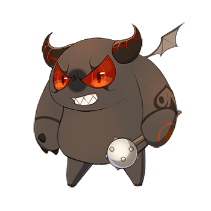

Display Images on Result:
PC 이용을 권장합니다.
소트를 제작한 목적은 애정캐릭터 순위를 매기기 위함이나 다른 목적으로 사용하셔도 무방합니다.
필터 기능은 합집합으로 작동됩니다.
스토리 등장 캐릭터는 일본 공식 사이트를 기준으로 등재하였습니다.
일본 공식 사이트에는 등재되어있지 않으나 임의로 추가한 캐릭터도 있습니다.
3성 다이서 피아, 알비온, 드래이그와 같이 성별이 불확실한 캐릭터는 성별을 지정하지 않았습니다.
티페레트의 경우 핵의 성별을 기준으로 삼았습니다.
리메이크 된 다이서의 경우 리메이크 이전과 이후 모두 포함되어있습니다.
중복되는 다이서를 제외하고 싶을 시엔 필터의 "Remove Duplicate"기능을 이용해주세요.
모든 유닛 소트 시 약 30분의 시간이 소요됩니다.
신규 캐릭터는 주기적으로 추가 할 예정입니다.
소트에 오류가 발생하거나 업데이트가 제때 되지 않았을 시 아래 연락처로 연락 바랍니다.

@B__A02
source code | clear save data
adapted from tohosort
Lord of Dice is created by Ngelgames
last updated 2021-04-20 (UTC+09)